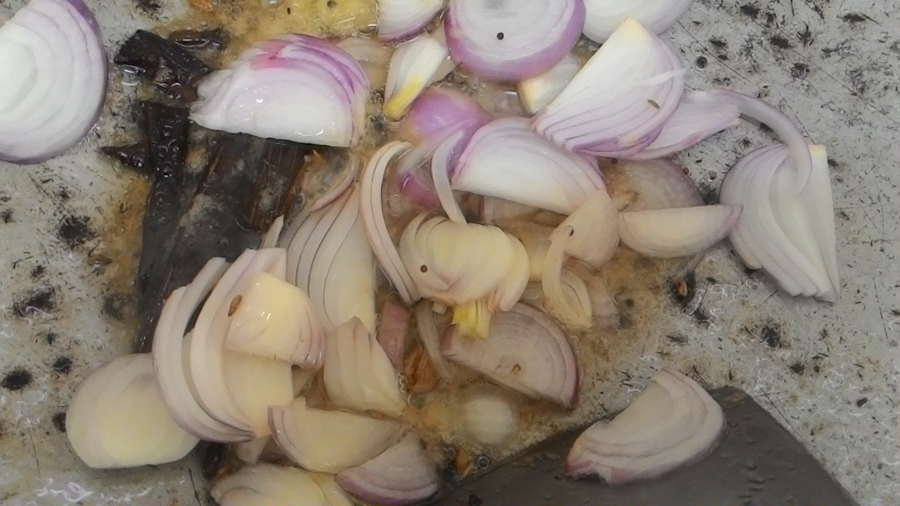
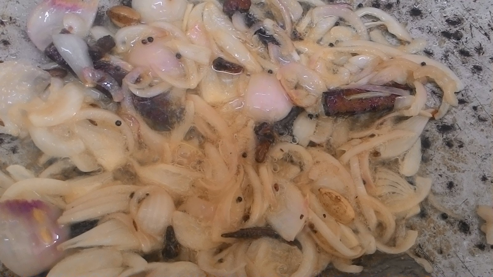
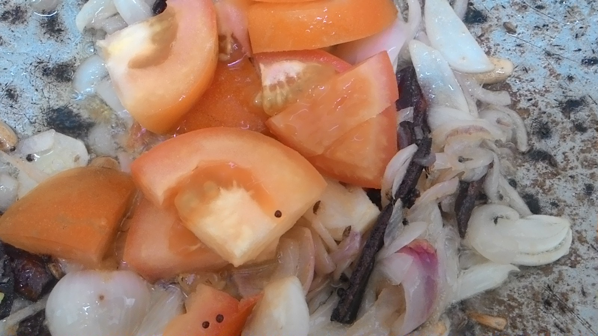
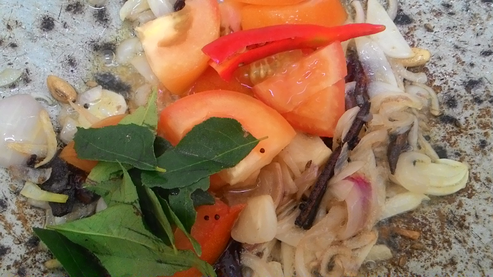
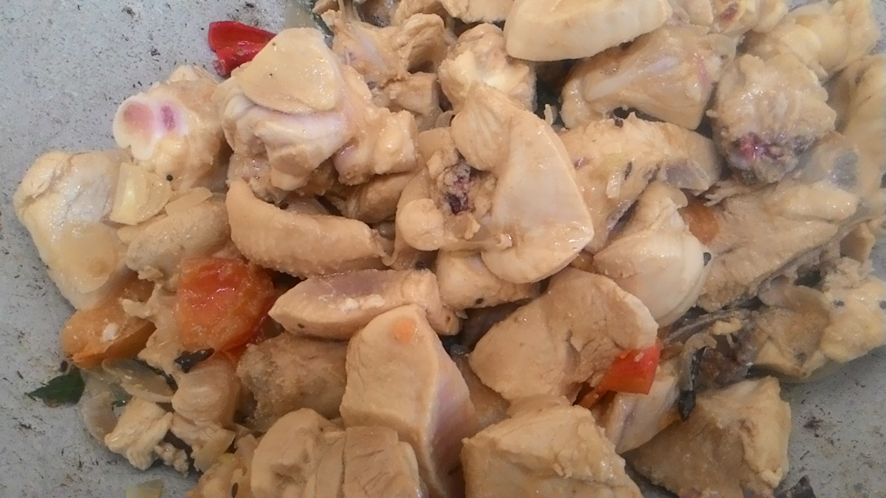
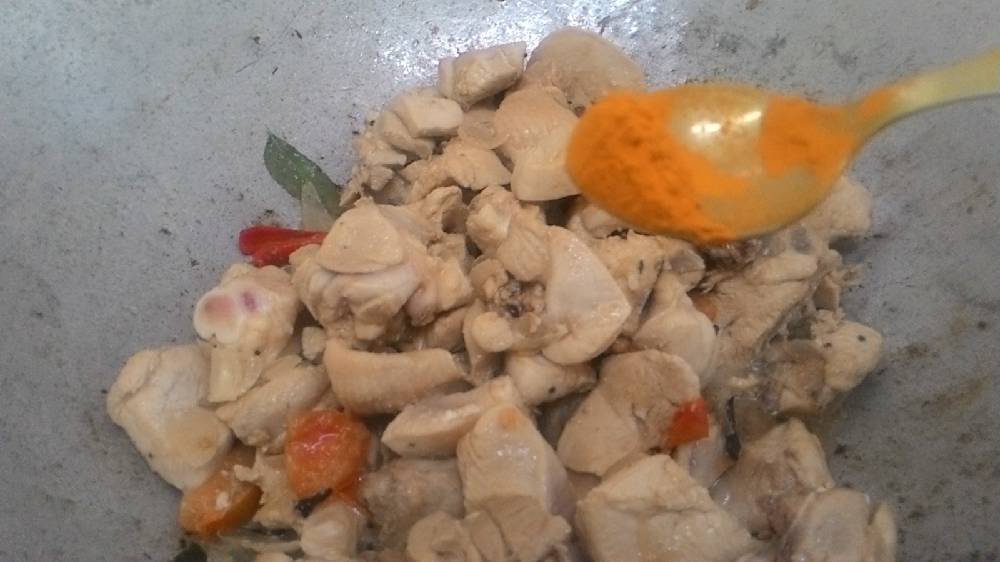
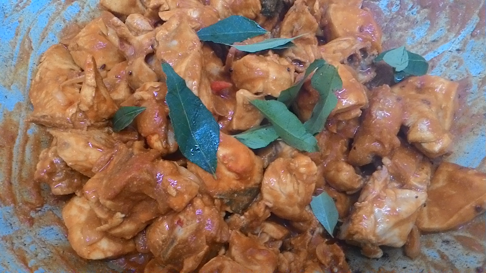
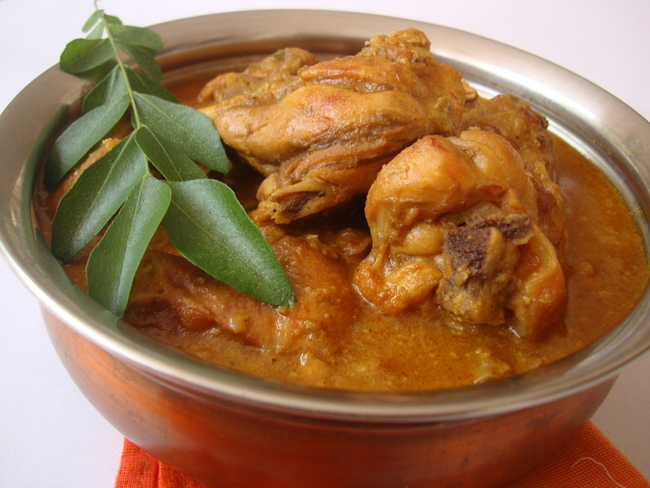

Chicken Curry
Chicken Curry Ingredients
- Cinnamon - 1 or 2
- Cloves - 3 or 4
- Cardamom - 2 or 3
- Star Anise - 3
- Mix Mustard Seed / Plain Mustard Seed - A bit
- Onion - 2 (chopped finely)
- Tomato - 1 (chopped) and 1 red chili sliced in the middle
- Curry Leaves - 10 leaves or more
- Mix Paste (A bit of Ginger and Garlic) - Clean and blend with a little water
- Chicken - 1 (cut into pieces) - Clean and wash, keep aside
- Plain Chili Powder - 1 tablespoon
- Turmeric Powder - Half teaspoon
- Chicken Curry Powder - 2 to 3 tablespoons
- Coconut Milk - 1 small bowl (I use ready-made coconut milk)
- Salt to taste
- Cooking Oil
- Water - 1 bowl
Preparation
Step by Step Process
- Heat up oil and add all the spices (cinnamon, mustard seeds, cardamom, star anise, cloves).


- Add ginger garlic paste and mix for 30 seconds.

- Add finely chopped onions and sauté until they turn light brown.

- Add tomatoes, chili, and a few curry leaves. Mix until the tomatoes cook a bit. (You can also add potatoes at this stage if desired.)
- Once the tomatoes are partially cooked, add chicken pieces and mix well.

- Mix the chicken periodically and cover until it's halfway cooked. No need to add water as chicken will release its own moisture. Use medium flame.
- Once the chicken is half-cooked, add turmeric powder, chili powder, and chicken curry powder. Mix well. You can also add more curry leaves (optional).
- Continue mixing and covering intermittently to ensure the powders are cooked properly. Use medium flame and no need to add water.

- After the powders are cooked and the raw smell disappears, add a bowl of water (or more if you want more gravy). Mix well and cover for 3-5 minutes.
- Uncover and mix well. The chicken should be fully cooked by this stage. The curry or gravy will start to thicken when not covered.
- Cook until you reach your desired consistency, whether slightly watery or thicker. It's up to your preference.

- Once you have the desired consistency, add salt to taste and coconut milk (the amount depends on your preference). Mix for 1 minute. Taste to ensure the salt is sufficient.
- Transfer the chicken curry to a serving bowl.

| Preparation Time |
cook time |
total time |
Serves |
Author |
| 20 mins |
1 hr |
1 : 20 mins |
3 |
Rahul |